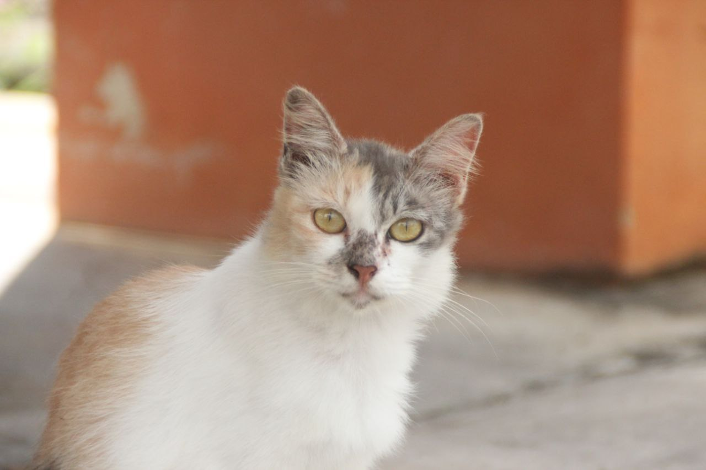
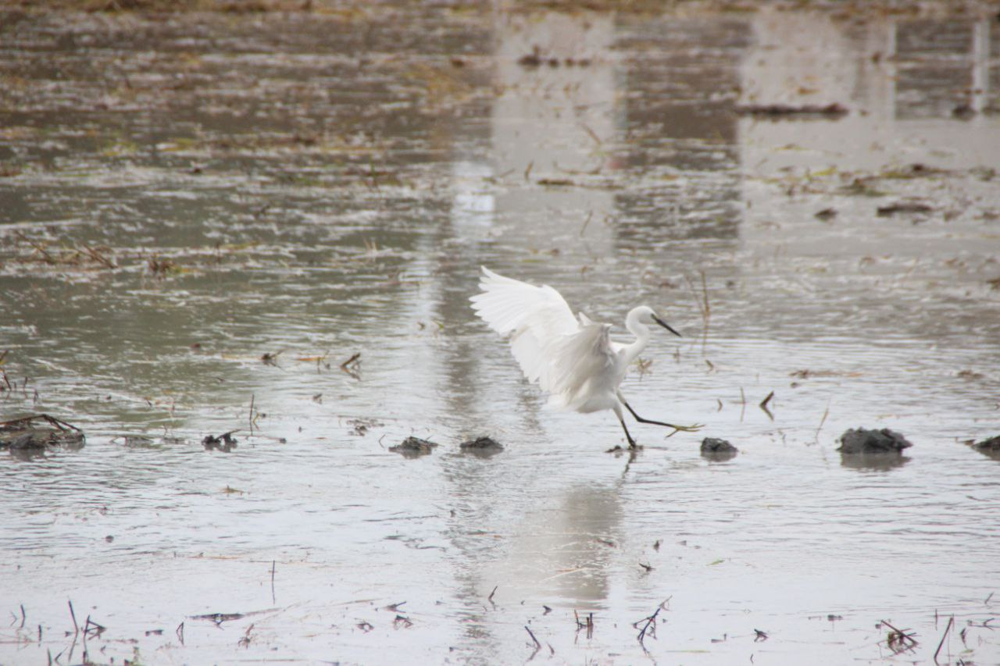

A Creative Technologist: Merging Code, Visuals, and Motion
Hi! My name is Nur Izzati Aina Binti Ismail or you can call me 'Zatie Ena', a student from New Media Communication course at University Malaysia Perlis (UniMAP). My dream career is to become a Creative Technologist which is a unique blend of web development, photography, and animation. I’m passionate about building interactive websites, capturing stunning visuals through a lens, and bringing ideas to life through motion graphics. This combination allows me to express creativity while leveraging technology to tell powerful stories and engage audiences in meaningful ways.
My Photography Showcase


